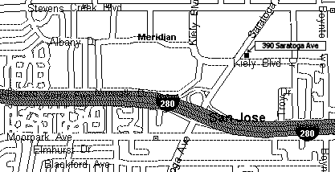

|
Holiday Banquet
This year's Holiday Banquet will be held on December 1 2002, from 11:00am to 4:00pm at Harry's Hoffbrau. (Note: Harry's does not accept credit cards or checks. There is an ATM machine near the cafeteria line, but we recommend that you bring cash.) The restaurant is located at 390 Saratoga Avenue near Kiely Boulevard. Their telephone number is 408-243-0434, if you would like more information about the Restaurant.

We will have the plant exchange again this year. Here is how it works. Everyone who brings one puts their plant on the table in the center of the room. The first person to pick selects the plant they want. Whoever brought that plant picks next, and so forth until all the plants have been picked. Obviously, the more desirable the plant you bring, the earlier you will get to pick.
The always popular plant auction and gift plants will be back, as well. In addition, members can select a decorative pot instead of their gift plant.
In addition to the other raffles and auctions at our Christmas party, we will be adding a drawing for those members who have paid their dues for 2003 by noon on December 1st.
To allow us to make appropriate reservations with the restaurant, please contact Bill Kurtz at 408-243-3692 to let him know how many people you will be bringing to the Christmas banquet.
|